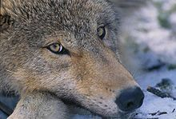
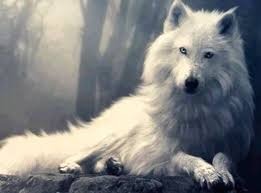
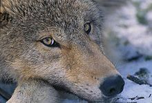
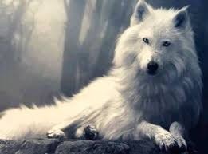
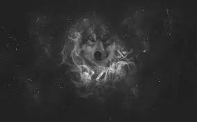
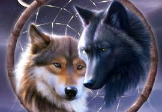
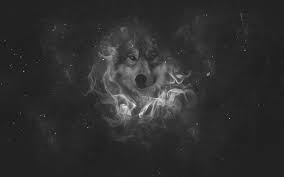
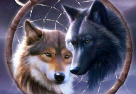
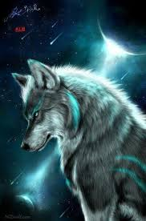

SITIO WEB DEMO
 
 
ENTREVISTA
El término "lobo" deriva del latín lupus, con el mismo significado. En zoología se usa también para definir una especie de pez teleósteo de doce centímetros de largo, un pez selacio de dos metros de longitud, para la foca, si se añade el adjetivo "marino", y para el lince, si se añade el adjetivo "cerval".También designa una máquina usada en hilandería para el trabajo del algodón y como sinónimo de embriaguez (en desuso). En Perú se usa como sinónimo de astuto. Se habla de un "lobo de mar" para referirse a un marinero experimentado mientras que, cuando se dice que un grupo de personas son "lobos de una camada", lo que significa en realidad es que comparten intereses comunes que les llevan a mantener una relación cordial.5 Por otra parte, el término "loba" solía usarse para calificar a las rameras. De hecho, según Tito Livio, es posible que la historia de la loba Luperca fuera usada para encubrir a una prostituta
